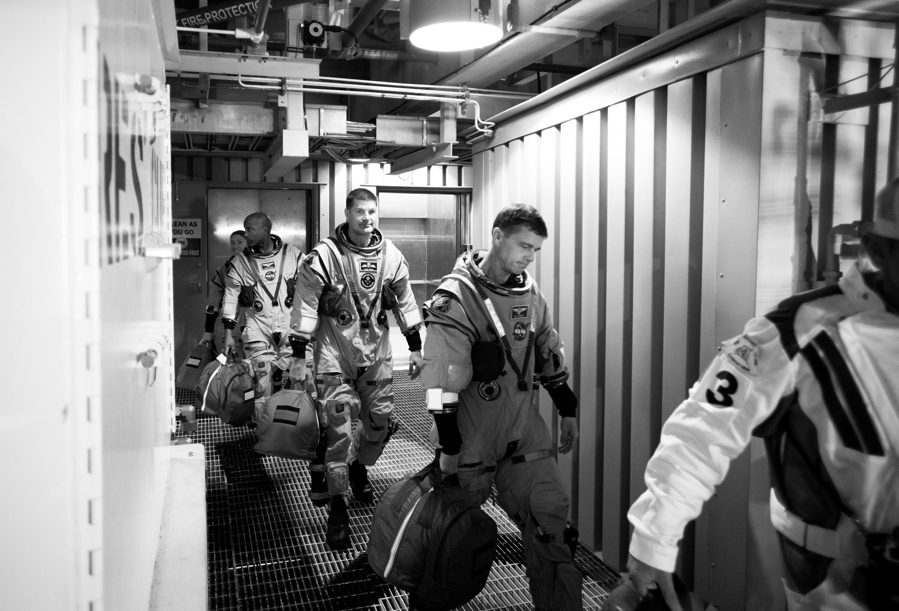
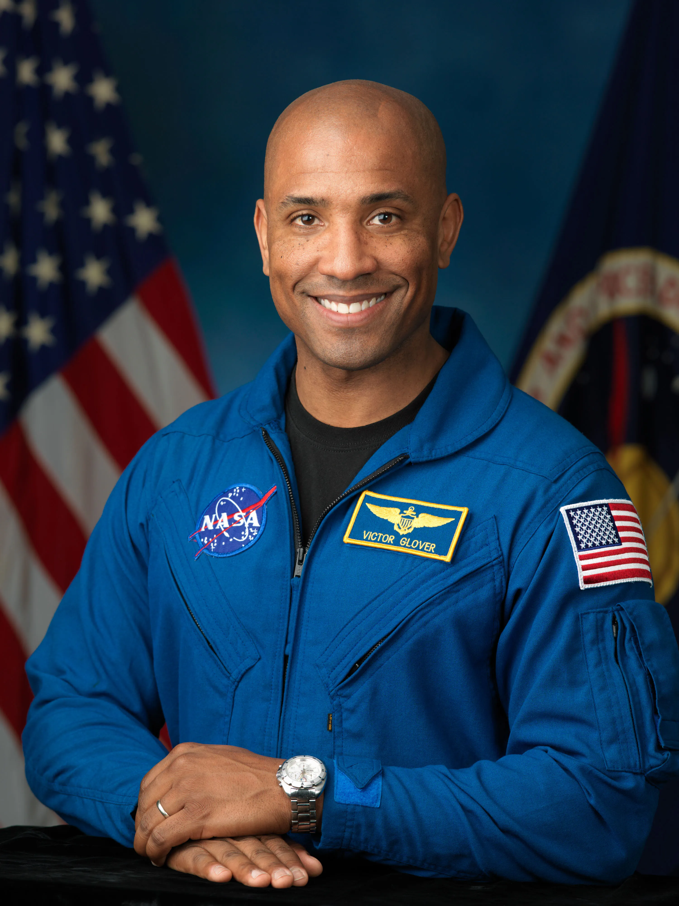
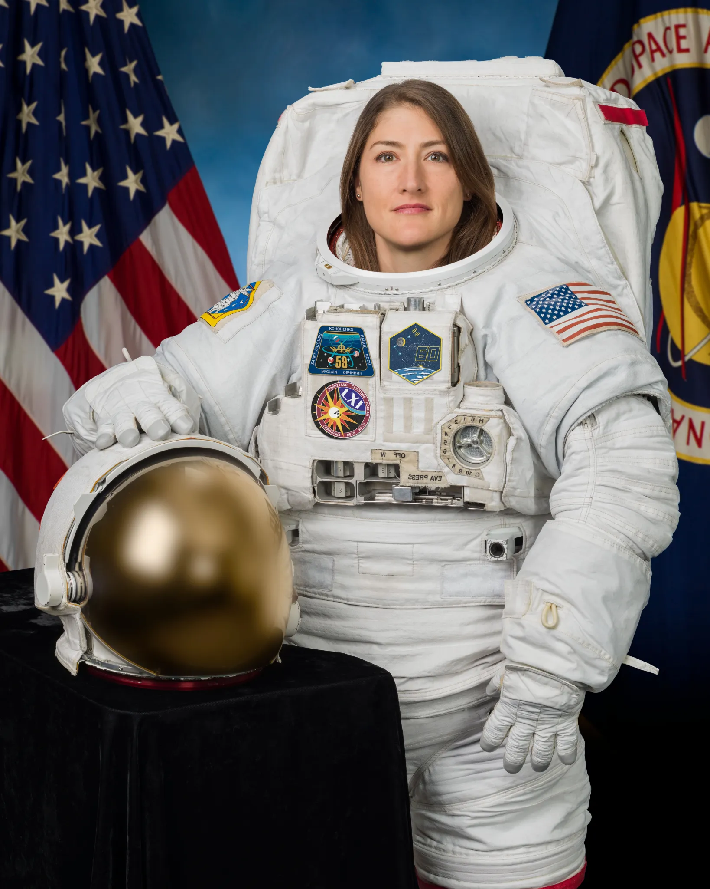
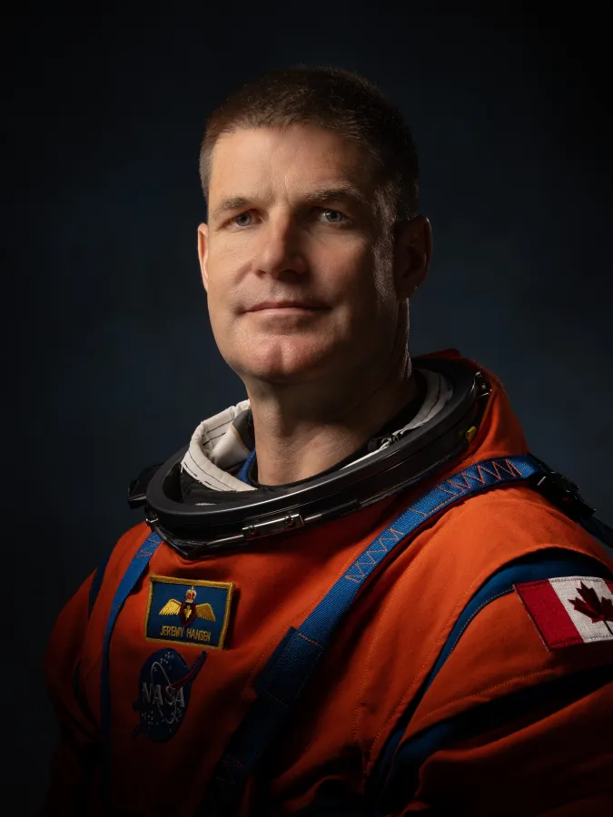
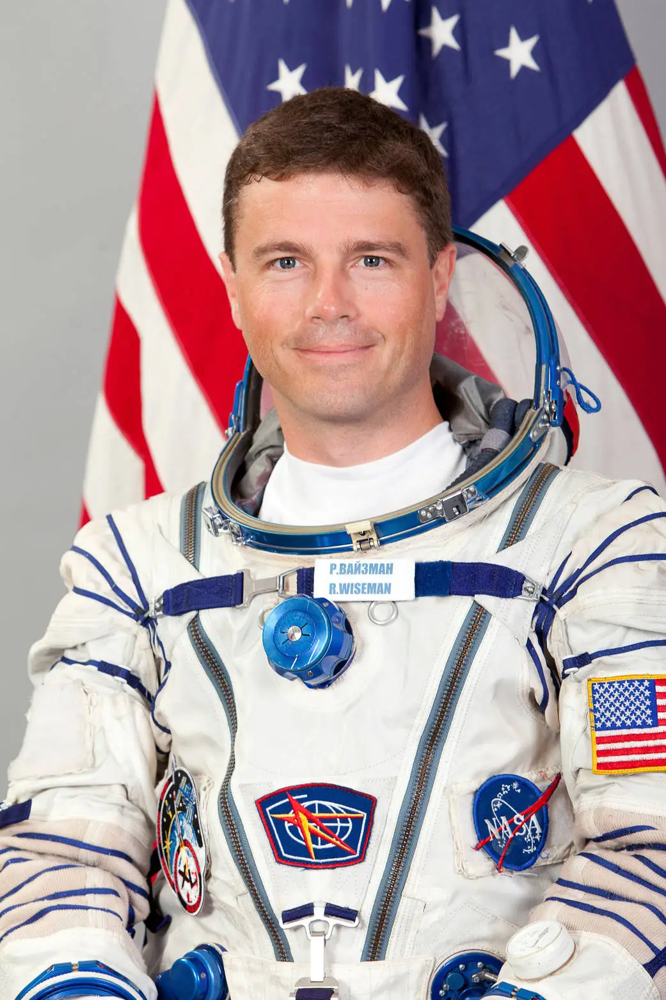
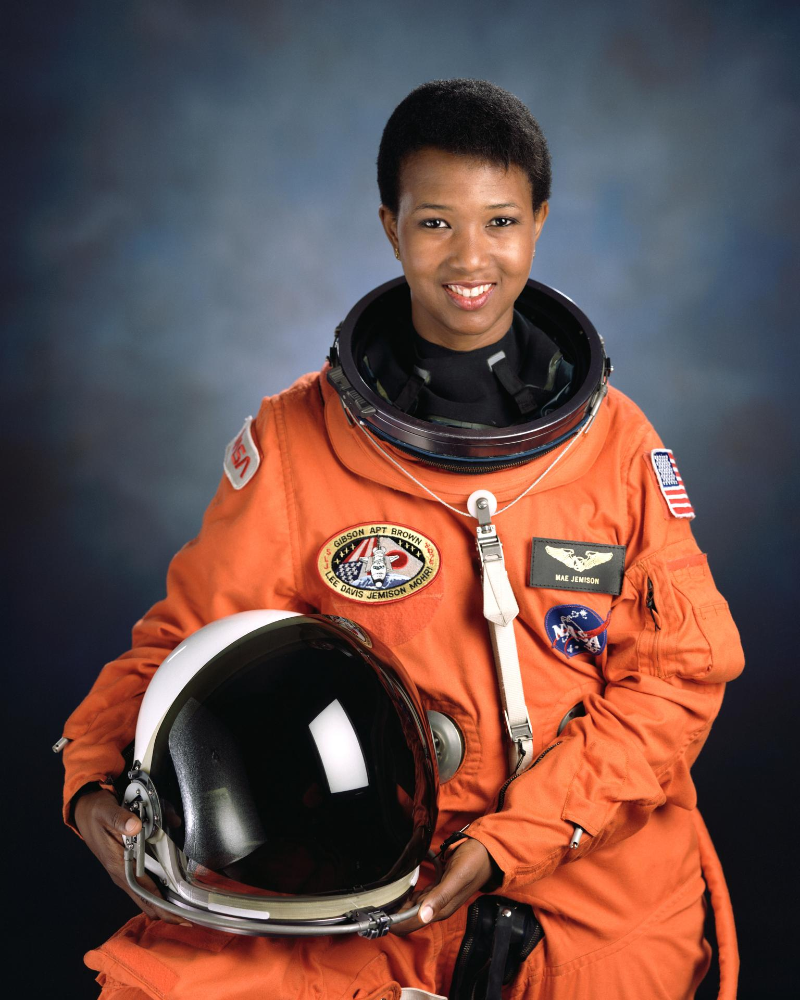
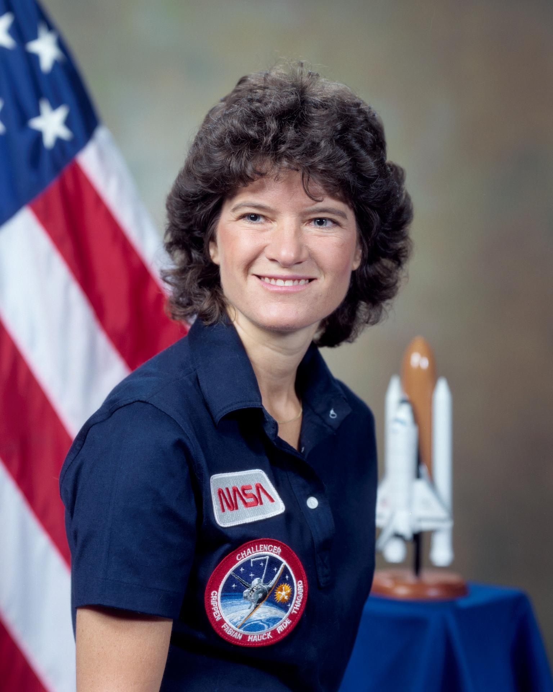

by Jane Owen
There are countless people who have made meaningful contributions to space travel over the past century. Some of those individuals, such as Apollo 11 crew members Commander Neil Armstrong, Command Module Pilot Michael Collins, and Lunar Module Pilot Edwin (Buzz) Aldrin, are widely celebrated for their achievements. Others, have unfortunatelly not received proper credit for their work. Here are just a few of the many individuals who have made significant contributions to the field.


Victor J. Glover has been a NASA astronaut since 2013. He has traveled to space twice! In 2018, as part of SpaceX Crew-1 Expedition 64, Glover spent 168 days in the International Space Station doing scientific research, maintenance, and completing 4 spacewalks. In 2026, Glover was Pilot on the historic Artemis II mission traveling farther into space than any human has traveled before, completing a full orbit of the moon. After completing the orbit, Glover shared a message with those back on Earth saying, "I think maybe the distance we are from you makes you think what we’re doing is special, but we’re the same distance from you. And I’m trying to tell you, just trust me, you are special. In all of this emptiness — this is a whole bunch of nothing, this thing we call the universe — you have this oasis, this beautiful place that we get to exist (in) together."

Christina Koch has been a Nasa astronaut since 2013. She has traveled to space four times and holds the record for the longest single spaceflight by a woman (328 days!), participated in the first all-female space walk, and was the first woman on a lunar mission. She has served as a flight engineer on the International Space Station for Expedition 59, 60 and 61. In 2026, she served as Mission Specialist I on NASA’s Artemis II mission traveling farther into space than any human has traveled before, completing a full orbit of the moon that took 252,756 miles. Koch is an adventurer in every sense of the word. She has done scientific research in remote corners of the world, including the arctic, and in her free time she enjoys surfing, rock climbing, community service, running, yoga, backpacking, photography and travel.

Jeremy Hansen has been a Canadian Space Agency (CSA) astronaut since 2011 and is the first Canadian to travel to the moon! In 2026, he served as Mission Specialist II for the Artemis II mission. When asked why he wanted to become an astronaut, he said, “The idea of exploring new places and accomplishing the seemingly impossible excites me. Being an astronaut affords the opportunity to be part of an amazing team that creates solutions for complex problems. To do something that has never been done before means that your team is very likely to face failure. I like the fact that in space, we are committed to bold goals to the extent that we will not let periodic failure stop our forward progress.”

Reid Wiseman has been a NASA astronaut since 2009, and served as Commander of the Artemis II mission. Before joining NASA, Wiseman was a Navy captain and aviator completing multiple deployments. In 2014, Wiseman embarked on international Expedition 41 on the International Space Station for 165 days. As Commander of the 2026 Artemis II mission, Wiseman was in charge of decision making, communication, and mission control.

Mae Jemison is a chemical engineer, medical doctor, and was a NASA astronaut from 1983-1993. In 1992, Jemison became the first African American woman in space as Mission Specialist with STS-47 crew aboard the Space Shuttle “Endeavour”. The crew made 127 orbits around Earth and completed many experiments related to how different materials are impacted in zero gravity environments. She left NASA to dedicate her career and platform to education, equality and sustainability.

In 1983, Sally Ride became the first woman to travel to space! Before studying physics at Stanford University, Ride had a short career as a professional tennis player. Her physical capabilities and strong scientific knowledge base made her a perfect candidate to be an astronaut. Her first mission with NASA was on the space shuttle Challenger STS-7 and lasted six days. After her passing in 2012, President Obama awarded her the Presidential Medal of Freedom posthumously.